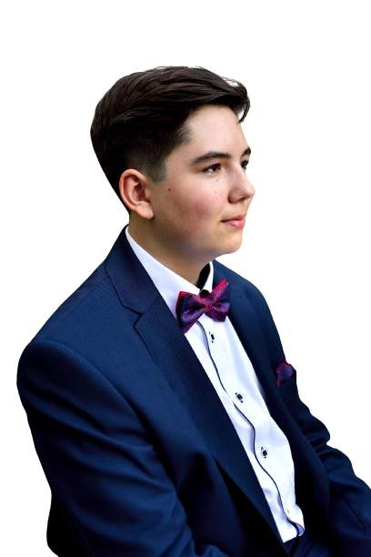

Liderzy KWW Nasz Wrocław!
Bartosz Żądło
Kandydat na prezydenta Wrocławia

Prywatnie: Gitarzysta, wielbiciel Wrocławia, fan rocka, miłośnik dobrej zabawy i podróży. Fan polskiej kinematografii lat 80-2000.
Zawodowo: Bezrobotny - poświęcony służbie miastu.
Piotr Błaszczak
Jedynka na liście do Rady Miasta.
Prywatnie: miłośnik lektury i kinematografii, kocha nature i wspinaczkę górską, historyk z zamiłowania.
Zawodowo: Chwilowo bezrobotny